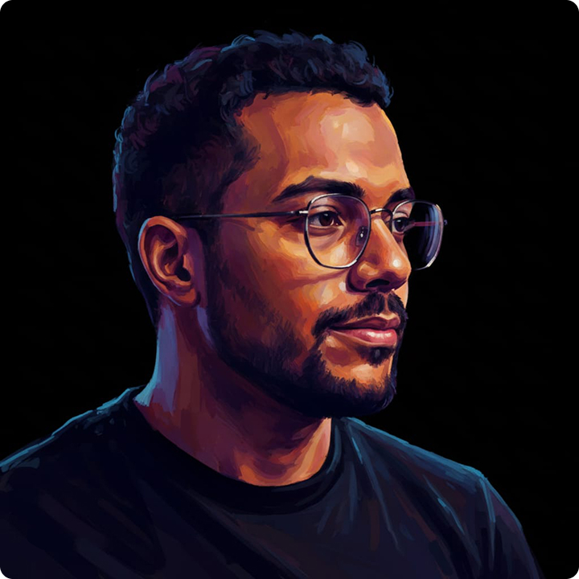

Web Designer &
Estudante UI/UX
Localizado no Ceará 🏖️

Localizado no Ceará 🏖️
Analista de Suporte em transição para UI/UX Design. Minha missão é usar minha bagagem técnica e experiência com usuários reais para projetar interfaces que funcionam de verdade. Atualmente focado em criar experiências digitais fluidas e visualmente impactantes através do Web Design.
Resolvendo problemas técnicos com empatia, garantindo a continuidade tecnológica e satisfação de cada usuário.
Organizando o fluxo logístico, preparando pedidos com precisão para garantir entregas rápidas e eficientes.
Auxiliando na manutenção de redes, configurando roteadores e monitorando sinais para aprender infraestrutura tecnológica.
Minha trajetória na tecnologia começou com a formação técnica em informática 💻, que consolidou minha base teórica e prática. Atualmente, foco em expandir minhas competências em desenvolvimento de software por meio de especializações intensivas, buscando sempre aplicar as tecnologias mais modernas do mercado.